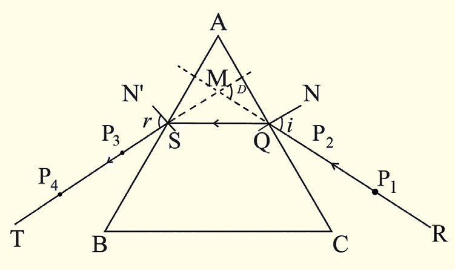

Activity 5.7
Aim:To determine the angle of minimum deviation of an equilateral triangular glass prism
Materials:a white sheet of paper, a drawing board, an equilateral triangular glass prism, drawing pins, a metre rule, a pencil, office pins, graph paper, a protractor, ICT Tools (computer or tablet with graphing software, digital camera, simulation tool)
Procedure
- 1. Place the white sheet of paper on the drawing board and fix it with the help of drawing pins.
- 2. Place an equilateral glass prism on top of the paper and trace its outline.
- 3. Remove the prism and label the outline as ABC.
- 4. On the side AC just above the centre of the outline, draw a perpendicular line NQ.
- 5. Measure the angle of incidence of 25° at the point of the perpendicular line and draw a line RQ.
- 6. Insert two pins P₁ and P₂ on the line RQ and replace the glass prism.
7.On the other side of a prism, trace the pins P₃ and P₄ which appear to be in line with P₁ and P₂, and draw line TS as shown in Figure 5.15.

Figure 5.15
- 8. Extend line RQ and line TS with dotted lines to meet at a point M.
-
9. Measure the angle of deviation D.
- 10. Repeat steps 5 to 8 for other angles of incidence of 30°, 35°, 40°, 45°, 50°, 55° and 60°.
-
11. Record your results in a table similar to Table 5.3.
-
12. Use ICT tools or otherwise to;(a)input your recorded data into a graphing software, if ICT is used. If not, start at (ii)(b)create a graph of the angle of deviation (y-axis) against an angle of incidence (x-axis)(c)find the angle of minimum deviation, which corresponds to the lowest point on the graph.
-
13. Optionally, capture images of your experimental setup and results to document your process.